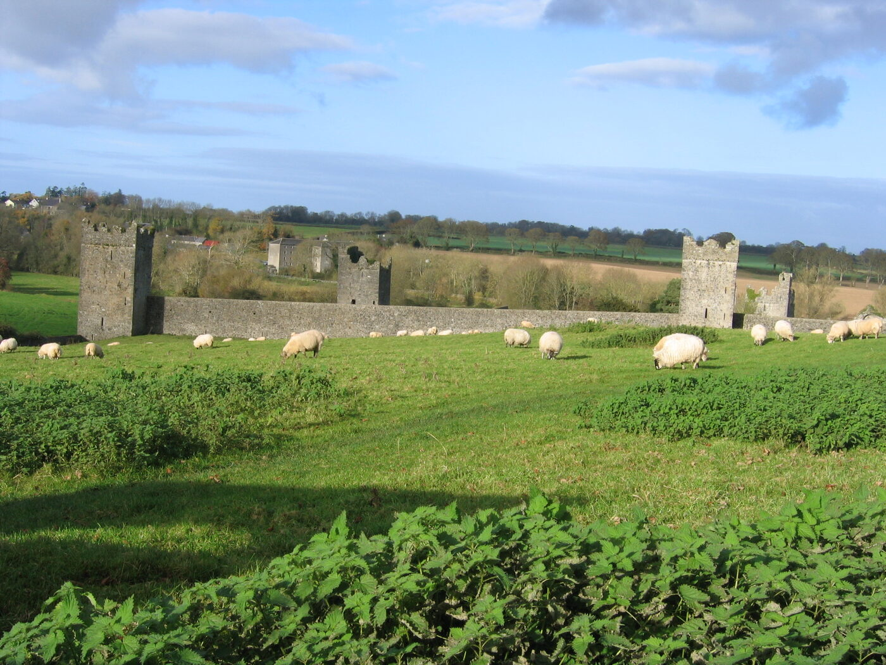

For the proof — Co. KilkennyKells Priory
In 1264 Sir Richard de Rupella gave a church’s advowson to this priory “for his soul, and for the souls of his ancestors and heirs — especially for the soul of John, his uncle.” It is now one of the largest medieval monuments in Ireland — the walled “Seven Castles of Kells.” Free, open every day, and twenty minutes from your Kilkenny heartland.
Kells, Co. Kilkenny · OPW · open daily · free entry